측량및지형공간정보기사 (2017-03-05 기출문제)
1과목: 측지학 및 위성측위시스템
1. 장반경이 6378532m, 단반경이 6356752m인 타원체의 편평률(flattening)은?
- 398.25
- 297.25
- 0.003426
- 0.003415
(정답률: 64%)

2. 다음 중 지리좌표에 해당하지 않는 것은?
- 측지위도
- 경도
- 시간
- 높이
(정답률: 79%)
3. 다음의 GNSS 측위 중 가장 높은 정확도를 기대할 수 있는 것은?
- 정지 측위
- 키네마틱 측위
- RTK 측위
- 단독 측위
(정답률: 83%)
4. 모호정수(cycle ambiguity)를 결정하여 고정해(fixing solution)를 산출하는 이유는?
- 측위정확도를 향상시킬 수 있기 때문이다.
- 대기효과를 제거할 수 있기 때문이다.
- 사이클슬립을 방지할 수 있기 때문이다.
- 수신기의 갑작스러운 이동을 막을 수 있기 때문이다.
(정답률: 60%)
5. GNSS 수신기의 기종은 달라도 수신된 관측 자료를 기종에 관계없이 공통의 형식(format)으로 변환시켜 사용하는 자료 형식은?
- IONEX
- RINEX
- SINEX
- RTCM
(정답률: 82%)
6. 중력이상에 관한 설명으로 옳지 않은 것은?
- 중력이상이란 보정된 기준면의 중력값과 표준중력의 차를 나타낸다.
- 밀도가 큰 물질이 지하에 있을 때는 음(-)값을 갖는다.
- 중력이상의 주된 원인은 지하의 밀도가 고르게 분포되어 있지 않기 때문이다.
- 중력이상을 해석함으로써 지하 구조나 지하 광물체의 탐사에 이용된다.
(정답률: 81%)
7. 관측점 사이의 고도차에 존재하는 물질의 인력이 중력에 미치는 영향을 고려하는 보정은?
- 자유고도(free-air)보정
- 위도 보정
- 부게(Bouguer) 보정
- 계기 보정
(정답률: 76%)
8. 다음 중 위치기반서비스(LBS)를 위한 실시간 위치결정과 거리가 먼 것은?
- GPS
- GLONASS
- GALILEO
- LANDSAT
(정답률: 78%)
9. 항공측량부분의 GNSS 응용에서 GNSS의 단점을 보완할 수 있는 장치로서 촬영비행기의 위치를 구하는 데 많이 활용되고 있는 것은?
- 레이저스캐너(LIDAR)
- 관성항법장치(INS)
- HRV 센서
- MSS 센서
(정답률: 71%)
10. DGPS에 대한 설명으로 옳지 않은 것은?
- DGPS에서는 2개의 수신기에 관측된 자료를 사용한다.
- DGPS 측량은 실시간 위치결정이 불가능하다.
- 기선의 길이가 길수록 DGPS의 정확도는 낮다.
- 일반적으로 DGPS가 단독측위보다 정확하다.
(정답률: 72%)
11. 양극(남극, 북극)의 좌표를 표시하기 위해 고안된 독립된 좌표계는?
- 극좌표
- UTM좌표
- 3차원 직각좌표
- UPS좌표
(정답률: 72%)
12. L2 반송파의 주파수가 약 1.2GHz 라고 할 때, L2 반송파의 파장은? (단, 빛의 속도는 3.0×108m/s 이다.)
- 5m
- 2.5m
- 0.5m
- 0.25m
(정답률: 56%)
13. 지구 표면의 거리(지름) 100km 까지를 평면으로 간주했다면 허용 정밀도는 약 얼마인가? (단, 지구의 반지름은 6370km이다.)
- 1/50000
- 1/100000
- 1/500000
- 1/1000000
(정답률: 59%)
14. GNSS의 특징에 대한 설명으로 틀린 것은?
- 날씨와 무관하게 측정이 가능하다.
- 24시간 연속적으로 측정이 가능하다.
- 실내외에서 모두 측정이 가능하다.
- 전 지구적으로 측정이 가능하다.
(정답률: 77%)
15. 우리나라에 설치된 수준점에 대한 설명으로 옳은 것은?
- 평균해수면으로부터의 높이를 나타낸다.
- 도로의 시점을 기준으로 나타낸다.
- 만조면 으로부터의 높이를 나타낸다.
- 삼각점으로부터의 높이를 나타낸다.
(정답률: 83%)
16. 자기장(H)의 단위와 관계가 없는 것은?
- tesla
- oersted
- gauss
- gal
(정답률: 60%)
17. GNSS에서 두 개의 주파수를 사용하는 주된 이유는?
- 전리층의 효과를 제거(보정)하기 위해
- 수신기 오차를 제거(보정)하기 위해
- 시계오차를 제거(보정)하기 위해
- 다중 반사를 제거(보정)하기 위해
(정답률: 72%)
18. 지자기측량에 관한 설명으로 옳지 않은 것은?
- 지자기는 그 방향과 크기를 구함으로써 결정된다.
- 지자기의 3요소란 수평분력, 편각 및 복각을 말한다.
- 북반구에서 복각은 음(-)의 값으로 나타난다.
- 편각이란 진북과 수평분력이 이루는 각을 말한다.
(정답률: 68%)
19. 해안선을 결정하기 위한 기준면으로 사용되는 것은?
- 평균해수면
- 평균최저간조면
- 약최고고조면
- 텔루로이드면
(정답률: 71%)
20. 구면삼각형에 대한 설명으로 틀린 것은?
- 구면상에서 삼각형 내각의 합은 180°보다 크고 540°보다는 작다.
- 구과량은 구면삼각형 내각의 합이 180°보다 큰 값으로 항상(+)이다.
- 구면삼각형의 두 점간의 거리는 대원의 호장(호의 길이)이 된다.
- 구과량은 면적에 반비례한다.
(정답률: 73%)
2과목: 응용측량
21. 도로 기점으로부터 1500m 지점에 교점이 있고, 반지름 R＝100m, 교각 I＝90°인 단곡선을 설치할 때, 곡선 시점까지의 추가거리는?
- 800m
- 1000m
- 1200m
- 1400m
(정답률: 58%)
22. 하천측량에서 관측한 수위에 대한 설명으로 옳지 않은 것은?
- 최고수위는 어떤 기간에 있어서 가장 높은 수위를 말한다.
- 평균수위는 어떤 기간의 관측수위를 합계하여 관측횟수로 나눈 것을 말한다.
- 갈수위는 하천의 수위 중에서 1년을 통하여 355일간 이보다 내려가지 않는 수위를 말한다.
- 평수위는 어떤 기간에 있어서 관측수위가 일정하게 유지되는 최대 기간 동안의 수위를 말한다.
(정답률: 51%)
23. 2500m2의 정사각형 면적을 ±0.1m2까지 정확히 구하기 위하여 관측하여야 할 한 변의 최대 오차는?
- ±2mm
- ±1.5mm
- ±1mm
- ±0.5mm
(정답률: 36%)
24. 하천의 심천측량(深淺測量)에 관한 설명으로 옳지 않은 것은?
- 하천의 수심 및 유수 부분의 하저상황을 조사한다.
- 유수의 실태를 파악하기 위해 하상의 물질을 동시에 채취하는 것이 일반적이다.
- 레드(lead)로 관측이 불가능한 얕은 수심의 경우 음향측심기를 사용한다.
- 심천측량에서 하천 폭이 넓고 수심이 깊은 경우에는 배를 이용하여 심천측량을 행한다.
(정답률: 56%)
25. 터널 내에서 기준점으로 사용되는 중심말뚝으로 차량 등에 파손되지 않도록 견고하게 설치하는 것은?
- 스터럽(stirrup)
- 다보(dowel)
- 쇼란(shoran)
- 양수표(water gauge)
(정답률: 71%)
26. 지하시설물 측량의 대상이 아닌 것은?
- 도시기준점
- 상수도
- 가스관
- 하수도
(정답률: 71%)
27. 단곡선에서 교각 I＝90°, 외할 E＝82.84m일 때, 곡선길이(C.L)는?
- 157m
- 165m
- 235m
- 314m
(정답률: 48%)
28. 다음 중 경사 약 30°의 경사 터널의 시점과 종점의 고저차를 가장 정밀하고 간편하게 구할 수 있는 방법은?
- 토털스테이션으로 경사와 경사거리를 측정하여 고저차를 구한다.
- 경사계로 경사를 구하고 줄자로 사거리를 측정하여 고저차를 구한다.
- 레벨과 표척을 이용한 수준측량에 의해 고저차를 구한다.
- 기압계에 의하여 고저차를 구한다.
(정답률: 69%)
29. 하천측량에서 수준측량작업과 거리가 먼 것은?
- 거리표설치
- 종단 및 횡단측량
- 심천측량
- 유속측량
(정답률: 43%)
30. 경관평가를 규정하는 기본적인 요소에서 시점과 주시대상물의 위치계수를 결정하는 수평경관각 10° θH≦30°의 범위에 대한 설명으로 옳은 것은?
- 구조물 자신의 시야의 대부분을 점유하게 되고, 구조물에 의한 압박감을 느끼게 된다.
- 구조물이 시계 중에 점유된 비율이 크게 되고, 구조물이 강조된 경관으로 얻어진다.
- 구조물의 전체상을 인식할 수 있고, 경관의 주체로 적당한다.
- 구조물은 도시환경과 일체가 되어 경관의 주체로서 대상이 되지 않는다.
(정답률: 56%)
31. 그림과 같은 구릉지에서 5m 간격의 등고선으로 둘러싸인 부분의 단면적이 A1=3800m2, A2＝1900m2, A3＝1800m2, A4＝850m2,A5＝350m2이라 할 때 각주공식에 의한 구릉지의 토량은?
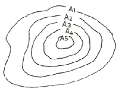
- 11,400m3
- 22,500m3
- 31,250m3
- 33,800m3
(정답률: 53%)
32. 터널측량의 순서 중 중심선을 현지의 지표에 정확히 설치하고 터널 입구의 위치를 결정하는 단계는?
- 답사
- 예측
- 지표설치
- 지하설치
(정답률: 66%)
33. 양단면 평균법에 따라 체적을 구하고자 한다. 두 단면 A1＝25m2, A2＝40m2와 구간거리 ℓ＝20±0.2m을 측정하였을 때, 체적오차는? (단, 면적의 오차는 무시)
- ±4.0m3
- ±6.5m3
- ±9.8m3
- ±12.0m3
(정답률: 41%)
34. 클로소이드 곡선의 반지름 R＝20m, 곡선길이 L＝5m일 때 클로소이드의 매개변수 A는?
- 5m
- 10m
- 15m
- 20m
(정답률: 59%)
35. 교각 I＝60°, 곡선 반지름 R＝150m, 노선의 기점에서 교점까지의 추가거리가 221.60m일 때 시단현의 편각은? (단, 중심말뚝 간격은 20m)
- 0°57′18″
- 2°51′53″
- 3°26′35″
- 4°41′17″
(정답률: 43%)
36. 그림과 같이 상향 기울기 5/1000, 하향 기울기 35/1000이고 반지름 3000m인 종단곡선 중에서 만날 경우 곡선시점(A)에서 40m 떨어져 있는 점의 종거 y2는?
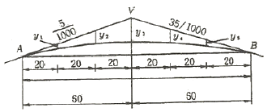
- 167mm
- 267mm
- 367mm
- 467mm
(정답률: 40%)
37. 수로가 비교적 직선이고 단면적도 규칙적이며 하상이 평평한 상태에서의 평균유속에 대한 설명으로 옳은 것은?
- 하상의 표면에 상관없이 평균유속의 위치는 같다.
- 일반적으로 평균유속의 위치는 수면으로부터 수심(H)의 0.2H∼0.3H 사이에 존재한다.
- 하상의 표면이 조잡할수록 평균유속의 위치는 낮아지고 평활할수록 높아진다.
- 수면으로부터 평균유속까지의 깊이는 수심과 하천 폭의 비가 증가함에 따라서 커진다.
(정답률: 52%)
38. 지거간 간격이 5m로 같고, 각 지거가 y1＝2.8m, y2＝9.4m, y3＝11.6m, y4＝13.8m, y5 = 6.4m로 이루어진 도형의 면적은? (단, Simpson 제1법칙에 의한다.)
- 208.7m2
- 370.5m2
- 469.2m2
- 545.2m2
(정답률: 53%)
39. 곡선반지름 200m의 곡선에 캔트 0.38m를 붙인 노선의 설계속도는? (단, 레일간격 D＝1.067m)(중력가속도(g):(9.8m/sec)
- 45.11km/h
- 72.21km/h
- 95.11km/h
- 102.21km/h
(정답률: 46%)
40. 달, 태양 등의 기조력과 기압, 바람 등에 의해서 일어나는 해수면의 주기적 승강현상을 연속 관측하는 것은?
- 조석관측
- 조류관측
- 대기관측
- 해양관측
(정답률: 69%)
3과목: 사진측량 및 원격탐사
41. 한 코스에 대하여 한 개의 촬영점으로부터 다음 촬영점까지의 종방향 실거리를 의미하는 것은?
- 촬영기선길이
- 종중복도
- 촬영코스길이
- 주점기선길이
(정답률: 54%)
42. 전자기파의 파장대를 파장이 짧은 것부터 순서대로 나열한 것은?
- 자외선⇒청색⇒녹색⇒적색
- 적색⇒자외선⇒청색⇒녹색
- 자외선⇒적색⇒녹색⇒청색
- 적색⇒녹색⇒청색⇒자외선
(정답률: 57%)
43. 절대표정에 대한 설명으로 옳지 않은 것은?
- 한 입체모델에서 수평위치 기준점 2점, 수직위치 기준점 3점이면 절대표정이 가능하다.
- 지상기준점이 없는 경우는 횡접합점(tie point)과 공면조건식으로 절대표정을 수행한다.
- 상호표정으로 생성된 3차원 모델과 지상좌표계의 기하학적 관계를 수립한다.
- 절대표정을 수행하면 횡접합점(tie point)에 대한 지상점 좌표를 계산할 수 있다.
(정답률: 39%)
44. 다음 중 탑재된 센서로 경사관측이 불가능한 위성은?
- SPOT 위성
- KOMPSAT 위성
- IRS 위성
- Landsat 위성
(정답률: 48%)
45. 고해상도 전정색(흑백) 공간영상자료와 저해상도 다중분광(컬러) 공간영상자료를 배합하여 고해상도 컬러영상을 제작하는 해상도병합(Resolution Fusion)기법이 아닌 것은?
- 색상공간모델 변환(IHS Transform)
- 주성분분석 변환(Principal Component Analysis Transform)
- 브로비 변환(brovey Transform)
- 퓨리에 변환(Fourier Transform)
(정답률: 56%)
46. 사진의 표정을 위해서 인위적인 기준점인 대공표지를 지상에 설치할 때 사진상에서 대공표지의 일반적인 크기는?
- 약 0.1㎛
- 약 1㎛
- 약 30㎛
- 약 100㎛
(정답률: 50%)
47. 광각사진기를 이용하여 수직 촬영한 경우 결과가 그림과 같을 때 건물의 높이는? (단, 촬영고도＝500m, r＝10cm, △r＝1cm)
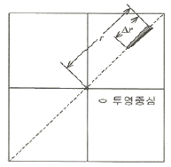
- 4m
- 10m
- 20m
- 50m
(정답률: 57%)
48. 격자형(Raster) 지리공간자료의 저장 포맷으로 가장 적당한 것은?
- Tiff
- JPG
- DXF
- Geotiff
(정답률: 57%)
49. 평탄한 지형이 촬영된 연직사진에서 촬영에 사용한 카메라의 초점거리가 150mm, 사진 크기 23cm×23cm, 종중복도 60%인 경우의 기선고도비는? (단, 사진의 축척은 1:10000 이다.)
- 0.61
- 0.83
- 0.92
- 1.04
(정답률: 56%)
50. 과고감(vertical exaggeration)에 대한 설명으로 옳지 않은 것은?
- 항공사진을 입체시 하면 산지는 실제보다 높게 돌출되어 보인다.
- 과고감으로 인하여 평탄한 지형의 지형판독이 어렵게 된다.
- 항공사진을 입체시 하면 사면의 경사는 실제 경사보다 급한 느낌을 준다.
- 항공사진을 입체시할 때 과고감은 촬영에 사용한 렌즈의 초점거리, 사진의 중복도에 따라 변한다.
(정답률: 60%)
51. 광속조정법(Bundle Adjustment)을 이용하여 항공삼각측량을 수행할 경우, 사진 3장이 중복된 부분에서 2점에 대한 지상좌표와 각각의 사진좌표를 측정할 경우 생성되는 공선조건식의 수는?
- 4개
- 6개
- 12개
- 24개
(정답률: 40%)
52. 초점거리 15.0cm의 사진기로 지표면으로부터 촬영고도 3600m에서 촬영한 연직사진의 축척은?
- 1:12000
- 1:24000
- 1:30000
- 1:54000
(정답률: 65%)
53. 다음 중 촬영된 한 장의 사진 내에서 사진축척의 변화량이 최소가 되기 위한 조건은?
- 지표면의 고저 변화가 없고 촬영고도가 일정할 때
- 수직사진으로 촬영하고 촬영고도가 일정할 때
- 지표면의 고저 변화가 없고 수직사진으로 촬영할 때
- 항사 사진 전체 지역의 축척은 일정
(정답률: 44%)
54. 원격탐사에서 SAR와 같은 능동형 센서의 특징으로 틀린 것은?
- 취득된 영상에는 다중분광영상 자료가 포함된다.
- 날씨의 영향을 비교적 적게 받는다.
- 밤에도 촬영이 가능하다.
- 위성체의 에너지 소모가 수동형 센서보다 많다.
(정답률: 39%)
55. 편위수정에 있어서 만족해야 할 3가지 조건이 아닌 것은?
- 기하학적 조건
- 광학적 조건
- 샤임프러그 조건
- 템플릿 조건
(정답률: 53%)
56. 입체시를 할 때 계곡이 솟아오른 능선으로 보이고, 산봉우리가 폭 꺼진 분지로 보이는 경우는?
- 기선길이가 너무 짧은 경우
- 음화와 양화가 섞여 있는 경우
- 입체시 되는 사진의 좌우가 바뀐 경우
- 좌우 사진의 심한 축척 차이가 있는 경우
(정답률: 58%)
57. 항공사진을 스캐닝 하여 영상을 만들고자 한다. 축척 1:25000의 항공사진을 스캐닝하여 영상화소(pixel)하나의 공간해상력이 26.5cm가 되도록 하려면 스캐닝 해상력(dpi)은 얼마로 설정하여야 하는가?
- 600dpi
- 1200dpi
- 2400dpi
- 4800dpi
(정답률: 46%)
58. 정사투영사진의 특성에 대한 설명으로 옳지 않은 것은?
- 기복변위가 없다.
- 편광입체시가 가장 잘 된다.
- 지도의 등고선을 중첩할 수 있다.
- 지표면의 비고에 관계없이 축척이 동일하다.
(정답률: 33%)
59. 항공사진측량을 통한 정밀지형도 작성을 위하여 필수적인 자료가 아닌 것은?
- 지상기준점측량 성과
- 토지이용 정보
- 내부표정요소
- 항공사진
(정답률: 67%)
60. 카메라의 초점거리 153mm, 촬영경사 3grade로 평지를 촬영한 항공사진이 있다. 이 사진에서 주점으로부터 최대 경사선 상의 등각점까지의 길이는?
- 1.8mm
- 3.6mm
- 5.8mm
- 6.4mm
(정답률: 49%)
4과목: 지리정보시스템
61. 지리정보시스템(GIS)에서 사용되는 관계형데이터베이스 모형의 특징에 대한 설명으로 옳지 않는 것은?
- 테이블 방식으로 데이터가 설계, 구축 및 관리된다.
- 데이터간의 위계가 없는 대신 개별 데이터 테이블 등이 존재한다.
- 두 개 이상의 테이블이 공유하는 공통필드를 키(Key) 필드라고 한다.
- 테이블의 수가 상대적으로 적어 저장 용량을 적게 차지한다.
(정답률: 61%)
62. 지리정보시스템(GIS)의 자료특성에 대한 설명중 틀린 것은?)
- 벡터(Vector)자료는 점(point), 선(line), 면(polygon) 자료구조로 단순화하여 좌표를 통해 실세계의 지형지물을 표현한 자료로 수치지도가 이에 속한다.
- 래스터(raster)자료는 균등하게 분할된 격자모델로 최소 단위인 화소(pixel)또는 셀(cell)로 구성된 자료로 항공영상, 위성 영상이 대표적이다.
- 속성정보는 지도상의 특성이나 질, 지형지물의 관계 등을 문자나 숫자형태로 나타낸 자료로 대장, 보고서 등이 이에 속한다.
- 위치정보는 절대위치정보만으로 구성되며 영상이나 지도 위의 점, 선, 면의 형상을 나타내는 자료이다.
(정답률: 63%)
63. 항공사진측량에 의한 수치지형도 제작과정으로 옳은 것은?
- 계획→촬영→수치도화→기준점 측량→현지조사→정위치편집→구조화 편집→활용
- 계획→촬영→현지조사→기준점 측량→수치도화→정위치편집→구조화 편집→활용
- 계획→촬영→기준점 측량→수치도화→현지조사→정위치편집→구조화 편집→활용
- 계획→촬영→기준점 측량→수치도화→정위치편집→현지조사→구조화 편집→활용
(정답률: 40%)
64. 보다 적은 자료량으로 지형지물의 특성을 간편하게 표현하기 위해 선형의 특징 점을 남기고 불필요한 버텍스(vertex)를 삭제하는 일반화 기법은?
- 단순화
- 완만화
- 축약처리
- 정리처리
(정답률: 64%)
65. 종이지도를 수치지도와 벡터 기반의 중첩분석을 실시하기 위한 방법으로 가장 적합한 것은?
- 스캐닝 후 영상 도면으로 사용
- 스캐닝 후 벡터라이징 작업으로 선형 입력
- 컴퓨터 마우스를 이용하여 수동적으로 입력
- 도면을 디지털 촬영 후 사진측량방법으로 취득
(정답률: 68%)
66. 여러 개의 레이어를 이용한 공간분석 기능을 수행한 결과가 그림과 같을 때 사용한 공간분석 편집 기능으로 옳은 것은?
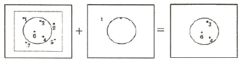
- Update
- Split
- Clip
- Erase
(정답률: 60%)
67. 공간정보의 표현기법 중 래스터데이터(Raster data)의 특징이 아닌 것은?
- 격자형의 영역에서 x, y축을 따라 일련의 셀들이 존재한다.
- 각 셀들이 속성 값을 가지므로 이들 값에 따라 셀들을 분류하거나 다양하게 표현한다.
- 인공위성에 의한 이미지, 항공영상에 의한 이미지, 스캐닝을 통해 얻어진 이미지 데이터들이다.
- 3차원과 같은 입체적인 지도 디스플레이 표현은 불가능하다.
(정답률: 57%)
68. 지리정보시스템(GIS) 데이터의 유통과 변환이 가능하도록 데이터의 포맷 등 형식을 동일한 방식으로 규정하는 것은?
- 데이터의 계통화
- 데이터의 표준화
- 데이터의 정렬
- 데이터의 객관화
(정답률: 68%)
69. 구축한 지리정보시스템(GIS) 데이터의 품질을 검사하기 위해서는 데이터를 샘플링 하여야 한다. 모집단을 보다 동질적인 몇 개의 층으로 나누고 이러한 각층으로부터 단순 무작위표본추출을 하는 방법은?
- 단순무작위샘플링(simple random sampling)
- 계통샘플링(systematic sampling)
- 층화계통비정렬샘플링(stratified systematic unaligned sampling)
- 층화무작위샘플링(stratified random sampling)
(정답률: 50%)
70. 선형 벡터 데이터 구조가 아닌 것은?
- 아크(arc)
- 노드(node)
- 체인(chain)
- 폴리라인(polyline)
(정답률: 51%)
71. 그림은 다익스트라(Dijkstra) 알고리즘을 이용한 최단비용경로 계산의 사례이다. A점에서 출발하여 G지점에 도착하는 최소비용경로는?(단, 숫자는 지점 간 소요비용)
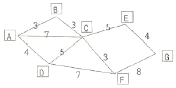
- ABCEG
- ACEG
- ACFG
- ABCFG
(정답률: 60%)
72. 격자자료를 압축저장 하는 방법이 아닌 것은?
- Run-Length code
- Chain code
- Block code
- Spaghetti code
(정답률: 57%)
73. 종이도면을 디지타이징할 때 발생하는 오류 중 지적필지가 아니면서 경계부분에서 조각부분이 발생하여 필지로 오인되는 형태의 오류는?
- Overshoot
- Sliver ploygon
- Undershoot
- Label 입력오류
(정답률: 68%)
74. 도형의 위상관계 성질에 해당하지 않는 것은?
- 포함성
- 연결성
- 동질성
- 인접성
(정답률: 56%)
75. 토지의 이용, 개발, 행정, 다목적 지적 등 토지자원에 관련된 문제 해결을 위한 정보 분석체계는?
- 환경정보체계(EIS)
- 토지정보체계(LIS)
- 위성측위체계(GNSS)
- 시설물정보체계(FMS)
(정답률: 71%)
76. 다음은 수치지도 ver 1.0 및 ver 2.0에 대한 설명이다. 괄호 안에 들어갈 알맞은 용어를 순서대로 나열된 것은?
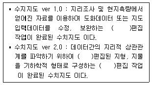
- 정위치, 정위치, 구조화
- 정위치, 구조화, 정위치
- 구조화, 구조화, 정위치
- 구조화, 정위치, 구조화
(정답률: 57%)
77. <입력 값>을 이용하여 <출력결과>를 얻기 위한 비교연산자로 옳은 것은?
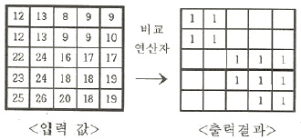
- (입력 값 ＞ ＝10) and (입력값 ＜ ＝20)
- (입력 값 ＞ ＝10) or (입력값 ＜ ＝20)
- (입력 값 ＞ 10) and (입력값 ＜ 20)
- (입력 값 ＞ 10) or (입력값 ＜ 20)
(정답률: 57%)
78. 지리정보시스템(GIS) 데이터 입력에 사용할 수 있는 장치가 아닌 것은?
- 드럼 스캐너
- 디지타이저
- 터치 스크린
- 잉크젯 플로터
(정답률: 59%)
79. 이미 알고 있는 값을 이용하여 알려지지 않은 지점에 대한 속성값을 추정하는 Spline, Kriging 등의 방식을 무엇이라 하는가?
- 추이분석(trend)
- 내삽(interpolation)
- 외삽(extrapolation)
- 회귀분석(regression)
(정답률: 61%)
80. 불규칙삼각망(TIN)에 대한 설명으로 옳지 않은 것은?
- 적은 자료로서 복잡한 지형을 효율적으로 나타낼 수 있다.
- 세 점으로 연결된 불규칙 삼각형으로 구성된 삼각망이다.
- 격자구조로서 연결성이나 위상정보가 존재하지 않는다.
- TIN모형을 이용하여 경사의 크기(gradient)나 경사의 방향(aspect)을 계산할 수 있다.
(정답률: 59%)
5과목: 측량학
81. 표와 같은 폐합트래버스 측량결과에서 BC의 위거와 경거의 누락되었다면, BC의 거리는? (단, 오차는 없는 것으로 가정한다.)
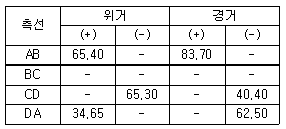
- 19.2m
- 34.75m
- 39.70m
- 53.95m
(정답률: 44%)
82. 전파거리측량기보다 광파거리측량기가 많이 이용되는 이유로 틀린 것은?
- 정확도가 높다.
- 1인 측량이 가능하다.
- 기상조건의 영향을 받지 않는다.
- 전파거리측량기에 비해 조작시간이 짧다.
(정답률: 58%)
83. A와 B 두 지점간의 고저차를 구하기 위해(1), (2) 및 (3)의 각각의 노선을 따라 직접 수준 측량을 실시하여 아래 표와 같은 결과를 얻었다. 두 점간 높이차의 최확값은?
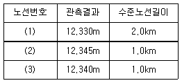
- 12.336m
- 12.338m
- 12.340m
- 12.345m
(정답률: 59%)
84. 그림과 같이 편심관측을 하여 S1＝2000m, S2＝1000m, e＝0.1m, T′＝120°, ψ＝330°의 결과를 얻었을 대, X1, X2는?
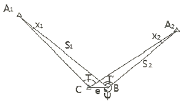
- X1＝3″, X2＝6″
- X1＝5″, X2＝10″
- X1＝10″, X2＝20″
- X1＝15″, X2＝30″
(정답률: 46%)
85. 댐의 집수구역 표시로 가장 적합한 것은?
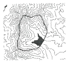
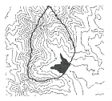
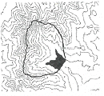
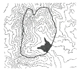
(정답률: 41%)
86. 전자기파 거리측량기의 거리관측오차 중, 거리에 비례하는 오차는?
- 위상차 관측의 오차
- 광변조 주파수의 오차
- 기계상수, 반사경 상수의 오차
- 거리관측기와 반사경의 기준점이 지상에서 벗어남에 의한 오차
(정답률: 42%)
87. 같은 경중률로 어느 두 점의 거리를 10회 측량한 결과, 평균값이 100.45m이고, 잔차제곱의 합이 0.⑤79m, 잔차의 합이 -0.10m이었다면 평균제곱근오차(RMSE)는?
- ±0.⑤m
- ±0.08m
- ±0.13m
- ±0.15m
(정답률: 48%)
88. 삼각 및 삼변측량에 대한 설명으로 옳지 않은 것은?
- 삼각망이 조건식수는 삼변망의 조건식수 보다 많다.
- 삼변측량의 계산에는 코사인(cos) 제2법칙을 사용한다.
- 삼각망의 조정시 필요한 조건으로 측점조건, 각조건, 변조건 등이 있다.
- 기하학적 도형조건으로 인해 삼변측량은 삼각측량 방법을 완전히 대신할 수 있다.
(정답률: 58%)
89. 거리관측에 있어서 표준자보다 3cm 줄어든 50m의 줄자를 사용하여 관측한 결과가 600m이었다면 실제 거리는?
- 599.64m
- 599.68m
- 599.72m
- 599.76m
(정답률: 61%)
90. 등고선의 성질에 대한 설명으로 옳지 않은 것은?
- 등고선과 최대 경사선은 수직을 이룬다.
- 등고선은 어떤 경우라도 교차하거나 합쳐지지 않는다.
- 경사가 같은 곳에서는 등고선 간의 간격도 같다.
- 등고선은 도면의 안 또는 밖에서 반드시 폐합한다.
(정답률: 68%)
91. 직육면체인 저수탱크의 부피를 구하기 위하여 밑변 a, b와 높이 h에 대한 관측 결과가 다음과 같을때 부피오차는? (a＝40.00m±0.⑤m, b＝10.00m±0.03m, h＝20.00m±0.02m)
- ±27m3
- ±21m3
- ±14m3
- ±10m3
(정답률: 33%)
92. 수준측량에서 전시거리와 후시거리를 같게 하는 이유로서 가장 적당한 것은?
- 개인습관에 대한 오차가 소거된다.
- 표척의 기울기에 대한 오차가 소거된다.
- 표척의 침하에 의한 오차가 소거된다.
- 기계오차와 지구곡률 오차가 소거된다.
(정답률: 65%)
93. 축척 1:300 지형도를 기초로 하여 같은 크기의 축척 1:5000지형도를 만들 때 필요한 축척 1:300 지형도는?
- 약 17매
- 약 144매
- 약 289매
- 약 582매
(정답률: 57%)
94. 경사면을 따라 거리를 관측할 때 경사에 의한 최대 오차가 1/1000 이라면, 경사각(α)의 최대 허용 오차는?(단, 경사에 의한 최대 오차＝BB′/AB=1/1000)
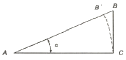
- 0°00′34″
- 1°34′40″
- 2°33′42″
- 3°34′42″
(정답률: 34%)
95. 해양의 수심･지구자기･중력･지형･지질의 측량과 해안선 및 이에 딸린 토지의 측량으로 정의 되는 것은?
- 수로측량
- 공공측량
- 수로조사
- 해안측량
(정답률: 42%)
96. 기본측량성과의 국외반출이 가능한 경우에 해당되지 않는 것은?
- 관광객 유치와 관광시설 홍보를 목적으로 측량용사진을 제작하여 반출하는 경우
- 축척 5천분의 1미만인 축척의 수치지형도
- 대한민국 정부와 외국 정부 간에 체결된 협정 또는 합의에 따라 기본측량성과를 상호 교환 하는 경우
- 축척 2만5천분의 1 또는 5만분의 1 지도로서 국가정보원장의 지원을 받아 보안성 검토를 거친 경우
(정답률: 66%)
97. 측량성과 심사수탁기관은 공공측량성과 심사의 신청을 받은 때에는 접수일로부터 20일 이내에 심사를 하여야 한다. 다만, 특정한 경우에 통지기간을 10일의 범위에서 연장할 수 있는데, 이 특정한 경우에 해당되지 않는 것은?
- 지상현황측량, 수치지도 및 수치표고자료 등의 성과심사량이 노선 길이 600km 인 경우
- 지하시설물도의 심사량이 200km인 경우
- 성과심시 대상지역의 기상악화 및 천재지변 등으로 심사가 곤란한 경우
- 지상현황측량, 수치지도 및 수치표고자료 등의 성과심사량이 면적 5km2인 경우
(정답률: 53%)
98. 측량기기의 성능검사 대상과 주기로 옳은 것은?
- 레벨 및 거리측정기 : 1년
- GPS 수신기 : 2년
- 토털 스테이션 : 3년
- 금속관로탐지기 : 4년
(정답률: 74%)
99. 측량업자로서 속임수, 위력, 그 밖의 방법으로 측량업과 관련된 입찰의 공정성을 해친 자에 대한 벌칙 기준은?
- 3년 이하의 징역 또는 3천만 원 이하의 벌금
- 2년 이하의 징역 또는 2천만 원 이하의 벌금
- 1년 이하의 징역 또는 1천만 원 이하의 벌금
- 300만 원 이하의 과태료
(정답률: 58%)
100. 공공측량 측량성과의 고시사항에 포함되지 않는 것은?
- 측량의 종류
- 측량의 정확도
- 측량성과의 보관장소
- 측량성과의 보존기간
(정답률: 41%)
편평률 = (장반경 - 단반경) / 장반경
= (6378532 - 6356752) / 6378532
= 21780 / 6378532
= 0.003415
따라서, 정답은 "0.003415"이다.